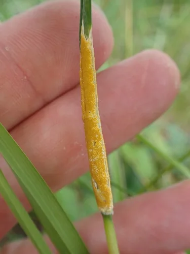

草的花序被毡状菌套包住、难以抽出
观察即将抽穗的一丛禾草。受影响的分蘖上，正常花序应抽出的位置可能被贴合叶鞘的白色或黄橙色毡状组织包住。

看包裹的位置
先别剥下，沿茎周看一圈。菌套常围绕上部叶鞘连续延伸一段，被包住的花序可能无法伸出，而相邻分蘖的穗仍正常抽出。
区分连续带与散点
叶锈的小脓疱散布在叶片上，个个分开；此处观察的是围住叶鞘的连续带。菌套早期较白，后来可变黄，因此不能单凭颜色判断。
确认是哪一种草
把正常穗和受害分蘖拍在一起，同时保留叶片特征。不同草种可因不同近缘真菌出现相似的套状物。留种或制种时，宜请当地禾草技术人员确认寄主与病因。
按分蘖跟踪
给异常分蘖做标记，等周边已抽穗后再看它能否结穗。受害分蘖数和受害草丛数要分别记录，因为同一丛中可以同时有健康穗和受阻的穗。
等同一草丛的正常穗抽出后再比较。晚发分蘖也可能尚未抽穗，但包裹它的是平滑绿叶鞘；受阻分蘖的毡状菌套在周围茎伸长时仍贴在原处。